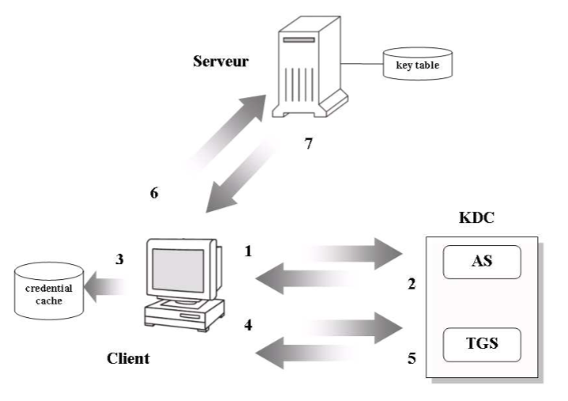
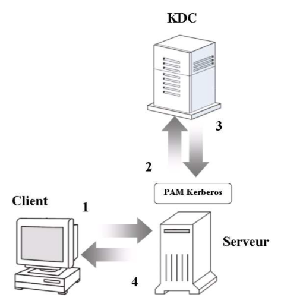
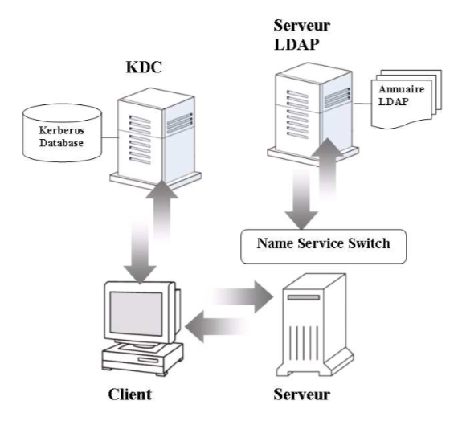

Kerberos est basé sur le concept d’un tiers de confiance appelé KDC (Key Distribution Center). Ce dernier est chargé de la vérification des identités des utilisateurs et des services pour un domaine d’administration. Sous Kerberos ce domaine d’administration est également appelé realm (traduit littéralement par royaume). Un domaine Kerberos ou realm est composé du serveur Kerberos (KDC), d’une base de données où sont enregistrées les données administratives et un ou plusieurs serveurs d’applications.
La base de données Kerberos (localisé sur le KDC) contient les principals et les mots de passe Kerberos de chaque utilisateurs. Un principal est une chaîne de caractères identifiant un utilisateur ou un service. Un exemple de principal est donné ci-dessous.
host/machiavel@INPRES.BE
Le champ primary (ici host), séparé du reste du principal par le caractère backslash (/), représente un nom ou un type de service. L’instance machiavel représente la machine offrant le service. Par contre, un utilisateur ne possède pas d’instance (par exemple dupont@INPRES.BE). Le domaine Kerberos (toujours spécifié en majuscule) est placé après le caractère @. Ainsi, la forme générique d’un principal est :
primary/instance@REALM
A chaque service (champ primary d’un principal) est associé une clé appelé service key connue du serveur et du service. Sur le serveur cette clé est enregistrée dans la base de données Kerberos. Sur la machine hôte (où est localisé le service) la clé de service est enregistrée dans un fichier appelé keytabs.
Sous Kerberos, l’accès à un service ne sera autorisé qu’aux clients présentant un ticket prouvant l’identité de l’utilisateur. Le client peut obtenir ce ticket auprès d’une tierce partie de confiance : le KDC (serveur Kerberos). L’obtention de ce ticket est réalisée en deux étapes :
Le client effectue une première demande de ticket auprès du KDC. Ce dernier génère un ticket appelé TGT (Ticket-Granting Ticket) crypté à l’aide du mot de passe de l’utilisateur stocké dans la base de données Kerberos. Le client demande à l’utilisateur d’entrer son mot de passe afin de décrypter le ticket reçu.
Le client utilise le TGT pour obtenir du KDC un deuxième ticket appelé TS (Ticket Service) qui sera utilisé pour s’authentifier auprès du service.
En procédant de la sorte, Kerberos offre un mécanisme de SSO. En effet, le mot de passe de l’utilisateur n’est demandé que lorsque le client demande le premier ticket (TGT). Les autres tickets (TS) permettant l’accès aux services, sont obtenus sur présentation du TGT.
En réalité, le processus d’authentification est plus complexe que l’explication donnée au paragraphe précédent. En effet, Kerberos utilise un algorithme de chiffrement à clé secrète (symétrique) pour réaliser l’authentification. La figure 5.1 reprend les différentes étapes du processus d’authentification mis en place par Kerberos. Les acronymes et symboles utilisés pour l’explication du schéma sont donnés ci-dessous.

Fig. 5.1 – Processus d’authentification Kerberos
L’utilisateur se connecte sur la machine cliente et, via une application kerbérisée, envoie une demande de ticket (TGT) au serveur d’authentification (AS).
L’AS vérifie la présence du principal (nom de l’utilisateur) dans la base de données Kerberos. Si l’utilisateur est retrouvé, l’AS génère une clé de session (Kc,tgs) qui sera utilisée pour la communication entre le TGS et le client. Ensuite, l’AS prépare deux messages à l’intention du client. Le premier contient la clé de session (Kc,tgs) cryptée au moyen d’une clé associée à l’utilisateur (Kc). Cette clé (Kc) est dérivée du mot de passe de l’utilisateur stocké sur le KDC. Le deuxième message est un ticket (TGT) contenant une copie de la clé de session et le nom de l’utilisateur. Ce ticket est ensuite crypté avec la clé secrète du TGS (Ktgs). Enfin, le ticket et la clé de session cryptée sont envoyés au client.
L’application cliente décrypte la clé de session (Kc,tgs) à l’aide du mot de passe fournit par l’utilisateur. Si la clé de session peut être décryptée alors le ticket et la clé de session (qui sont également appelés credentials) sont stockés dans un cache (sur la machine cliente) pour un usage ultérieur. Il est important de remarquer que le mot de passe de l’utilisateur ne passe pas sur le réseau. La clé de session (Kc,tgs) est cryptée avec la clé Kc. Par conséquent, seul le client peut lire la clé de session (Kc,tgs). De plus, le contenu du ticket ne peut être lu ni modifier par le client (en effet, le ticket est crypté avec la clé secrète du TGS : Ktgs).
Le client génère un authentificateur contenant le nom de l’utilisateur, son adresse IP et une date d’expiration. Cet authentificateur est ensuite crypté au moyen de la clé de session (Kc,tgs) obtenue préalablement. L’authentificateur crypté et le ticket (contenant la clé de session Kc,tgs) sont envoyés au TGS afin d’obtenir un ticket pour un service déterminé.
Le TGS est le seul à pouvoir décrypter le ticket au moyen de sa clé secrète (Ktgs) et ainsi obtenir la clé de session (Kc,tgs). Afin d’authentifier la demande du client, le TGS utilise la clé de session pour décrypter l’authentificateur du client. En cas de réussite, le TGS crée une nouvelle clé de session (Kc,s) pour la communication entre le client et le serveur. Cette clé de session de service (Kc,s) est crypté avec la clé de session connue du TGS et du client (Kc,tgs). Ensuite, un ticket de service (TS) est également créé. Ce ticket contient une copie de la nouvelle clé de session (Kc,s). Ce ticket est ensuite crypté, mais cette fois, au moyen de la clé secrète du service (Ks).
Le client décrypte la nouvelle clé de session (Kc,s) au moyen de sa clé de session (Kc,tgs). Ensuite, le client tente de s’authentifier auprès du serveur sur lequel il désire se connecter. Pour cela, le client envoi un nouvel authentificateur (crypté au moyen de la clé de session Kc,s) et le ticket de service (TS). Le serveur valide la clé de session Kc,s en décryptant le ticket au moyen de sa clé secrète (Ks) stockée dans sa table de clés (key table). Enfin, l’authentificateur du client est décrypté à l’aide de la clé de session Kc,s. Si le serveur peut décrypter l’authentificateur et si le ticket de service n’est pas expiré, l’accès au service est accordé.
La dernière étape optionnelle permet au service de retourner un authentificateur et ainsi s’authentifier auprès du client.
Cette section reprend les différentes possibilités d’intégration de Kerberos et les avantages et inconvénients des scénarios proposés.
Un des gros inconvénient de Kerberos est l’utilisation d’applications kerbérisées. En effet, pour que les programmes clients et serveurs puissent utiliser Kerberos, ils doivent être compilés avec les bibliothèques Kerberos. En supposant que toutes les sources des programmes clients et serveurs utilisés au sien du domaine Kerberos soient disponibles, la modification de certaines applications demanderait un effort de programmation trop important.
L’implémentation de Kerberos réalisée par le MIT fournit des versions kerbérisées des services réseau classiques. Les différents programmes clients et serveurs Kerberos sont repris ci-dessous.
L’utilisation des applications kerbérisées suit le schéma classique d’utilisation de Kerberos. En premier lieu, l’utilisateur exécute la commande kinit afin de récupérer le TGT et la clé de session. La commande kinit va également demander le mot de passe à l’utilisateur pour décrypter la clé de session. La clé de session et le ticket sont alors stockés dans le cache du client. Ensuite, l’utilisateur exécute un programme client kerbérisés : par exemple la version de telnet fournie avec Kerberos (appelée Ktelnet par la suite). Ktelnet vérifie dans le cache du client s’il existe déjà un ticket et une clé de session pour le service demandé. Si ce n’est pas le cas, ktelnet contacte le KDC afin d’obtenir un ticket pour ce service. Le ticket de service et la clé de session correspondante sont également enregistré dans le cache du client. Enfin, ktelnet envoie le ticket de service au programme serveur telnetd kerbérisé. Ce dernier peut vérifier la validité du ticket en le décryptant avec sa clé secrète.
L’avantage de ce schéma est le mécanisme de SSO mis en place. En effet, la commande kinit n’est lancée qu’une seule fois afin de récupérer le ticket initial. Par la suite, les applications kerbérisées utiliseront les tickets contenu dans le cache pour contacter les services ou pour obtenir de nouveaux tickets pour d’autres services. L’inconvénient de ce système est l’obligation d’utiliser des applications kerbérisées. De plus, pour pouvoir se logger sur le système hôte, l’utilisateur doit posséder un compte local (fichier passwd).
L’architecture PAM permet de configurer plusieurs modules de sécurité sans avoir à modifier les services (voir Pluggable Authentication Module page 54). Il existe de nombreux modules de sécurité pour PAM dont un module pour l’authentification Kerberos. Ainsi, toutes les applications utilisant PAM peuvent, via le module pam_krb5, utiliser Kerberos. Cependant, l’utilisation du module PAM pour Kerberos ne permet pas de configurer le client d’application comme client du KDC.
Comme montrer à la figure 5.3, seul le serveur d’application est configuré comme client du KDC. L’application cliente qui n’est plus kerbérisée demande le mot de passe à l’utilisateur. Dans ce schéma, l’utilisateur n’a plus de credential (données lui permettant de s’identifier) et le mot de passe est transmis en clair vers le programme serveur (1). Ensuite, via le module PAM pour Kerberos, le programme serveur effectue une requête d’authentification au près du KDC (2). Pour cela, le module pam_krb5 utilise le mot de passe reçu pour obtenir un TGT et un ticket pour le service (3). Les credentials obtenus sont stockés sur l’hôte du programme serveur et seront supprimés à la fermeture de la session. Enfin, l’utilisateur est autorisé à accéder au service s’il possède un compte local sur la machine hôte (4).

Fig. 5.2 – Utilisation du module PAM pour Kerberos
L’utilisation de pam_krb5 permet d’employer Kerberos comme mécanisme d’authentification pour un grand nombre d’applications. Cependant, le module PAM pour Kerberos (pam_krb5) ne permet pas de tirer profit du mécanisme de SSO offert par Kerberos. En effet, l’application cliente n’est plus configurée comme client Kerberos et par conséquent n’est plus en mesure d’obtenir les credentials nécessaires au SSO. L’autre désavantage de pam_krb5 est l’envoie du mot de passe en clair sur le réseau par l’application cliente. De plus, un compte en local doit exister pour permettre l’accès au service.
Dans les deux cas précédents, les utilisateurs enregistrés sur le KDC doivent posséder un compte sur les machines hôtes. En effet, le serveur Kerberos ne centralise que les mots de passe des utilisateurs du domaine Kerberos (realm). Ainsi, pour retrouver les informations concernant un compte utilisateur, le service recherche dans les bases de données locales du système d’exploitation (fichiers passwd et group). Cependant, grâce au mécanisme NSS (voir Naming Service Switch page 51), il est possible de configurer les services afin qu’ils retrouvent les informations des comptes utilisateur dans un annuaire LDAP.

Fig. 5.3 – Kerberos et annuaire LDAP
Le principe de l’authentification Kerberos est identique au premier cas : une application cliente kerbérisée est utilisée pour récupérer les tickets nécessaires à l’authentification d’un utilisateur auprès d’un service réseau (également kerbérisé). Mais, au lieu de consulter uniquement les bases de données locales, les services utilisent l’annuaire LDAP comme service de nommage. Ainsi, il devient possible de centraliser toutes les informations concernant les comptes utilisateur dans l’annuaire LDAP. Cette architecture sera retenue pour les tests d’installation et de configuration de Kerberos.
Dans ce cas, l’annuaire LDAP ne contient plus uniquement les informations des comptes utilisateur. En fait, l’annuaire LDAP est utilisé par Kerberos comme base de données pour enregistrer les principals et les clés. Actuellement, cette solution n’est pas supportée par le serveur Kerberos du MIT. Par contre, le serveur Kerberos Heimdal permet de réaliser ce mécanisme.